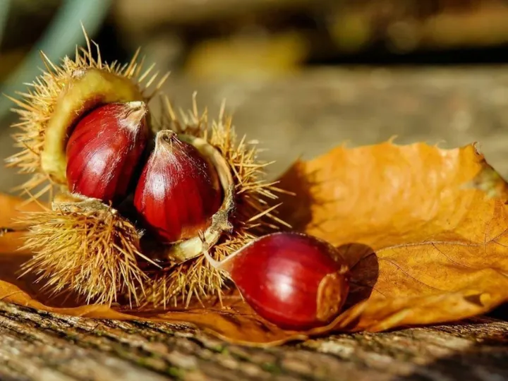

dom 25 ott
Autunno, Castegne e...Sipario!
C’è un profumo che sa subito d’autunno , un calice da condividere e quella voglia di ritrovarsi che rende speciale ogni stagione. A Cortina, l’autunno si festeggia insieme, nel cuore del paese, con un appuntamento che intreccia gusto , tradizione e divertimento .
 Indicazioni
Indicazioni
- Costi e prenotazioni
- Costo non indicato · Prenotazione non indicata
- Programma
- Programma da verificare. Apri la fonte ufficiale per orari e possibili aggiornamenti.
- In caso di maltempo
- Nessuna indicazione specifica pubblicata.
- Note
- Acquisito automaticamente dalla fonte.
L’EVENTO
Descrizione completa
C’è un profumo che sa subito d’autunno , un calice da condividere e quella voglia di ritrovarsi che rende speciale ogni stagione. A Cortina, l’autunno si festeggia insieme, nel cuore del paese, con un appuntamento che intreccia gusto , tradizione e divertimento .
Domenica 25 ottobre , Largo delle Poste si trasforma in un punto d’incontro dove lasciarsi conquistare dal sapore delle castagne e del vino, grazie alla presenza dell’Associazione Produttori del Marrone di Combai. Un’occasione per celebrare i prodotti della stagione, riscoprire il piacere delle cose semplici e brindare all’atmosfera autentica della montagna, accompagnati dalla musica dal vivo.
E quando il gusto incontra la cultura, la festa si accende di nuove emozioni: alle 15:30 spazio alla rappresentazione teatrale di Ra Filodramàtica d’Anpézo , per immergersi nello spirito e nell’identità della comunità ampezzana attraverso il linguaggio del teatro.
La Castagnata d’Autunno è un invito aperto a tutti: famiglie, amici e a chiunque abbia voglia di trascorrere un pomeriggio in compagnia. Un’attenzione speciale è riservata agli over 60 e alle famiglie con bambini, che potranno usufruire di una consumazione gratuita.
Castagne, vino, musica e teatro: il bello dell’autunno è stare insieme .
IL PROGRAMMA
Programma e orari
Appuntamenti raccolti dalle fonti elencate. Dove manca un orario, non è ancora disponibile in questa scheda.
Programma pubblicato
- 2026-10-25 — 2026-10-25 · 15:30:00
INFORMAZIONI UTILI
Prima di partire
- Controllare la fonte prima di partire.
ORGANIZZAZIONE